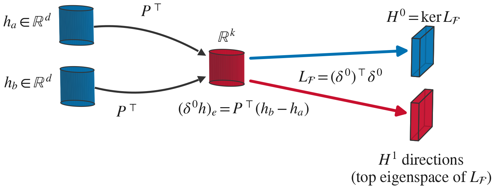
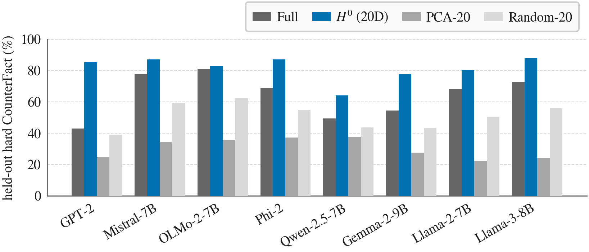
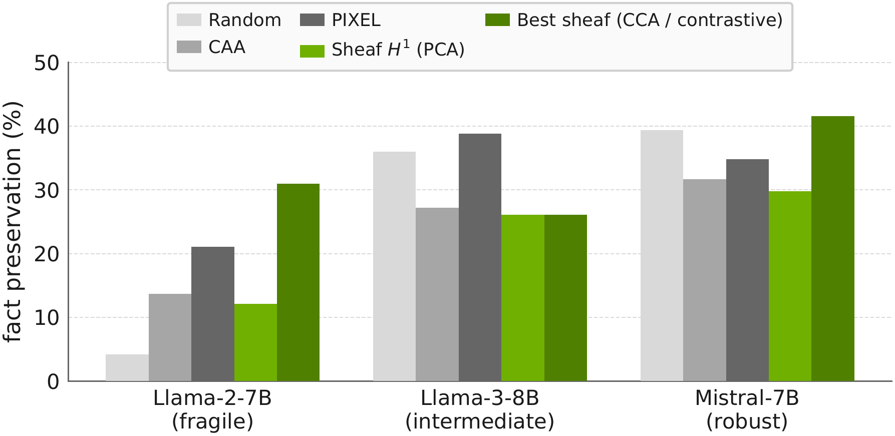

Interpretability tools decompose a single activation into features, probe attributes chosen in advance, or compare whole activation spaces, and none of them measures whether a representation encodes the same content when the phrasing changes. We treat each paraphrase pair as a local witness that two activations should agree and build a cellular sheaf over the paraphrase graph; its Laplacian \(L_\mathcal{F}\) answers the question on a frozen model with no training. The kernel \(H^0\) is a content subspace: at 20 dimensions it beats the preserved subspace of the concept eraser LEACE on held-out CounterFact fact retrieval across eight architectures by a mean \(+17.1\) pp, and constraining all paraphrases of a fact jointly adds a further \(+6.5\) pp. The spectral complement concentrates causal influence: ablating the most paraphrase-variable coordinates, a coordinate-wise proxy for it, changes model outputs \(5.6\) to \(26.5\times\) more than ablating coordinates of matched per-coordinate variability, across nine models from 124M to 13B parameters. Stacking layers into a grid creates \(b_1 = N(L-1)\) algebraic 1-cycles, and the resulting model-derived harmonic mass varies by nearly three orders of magnitude across six architectures and ranks them as their steering fragility does (Spearman \(\rho = 0.90\), exact one-sided permutation \(p = 0.014\)). Paraphrase-invariant content and a model's failure to glue it across layers are thus read off one operator.
Nodes hold mean-pooled hidden states, edges connect paraphrases, and a restriction map \(P \in \mathbb{R}^{d \times k}\) projects each pair into a shared \(k\)-dimensional comparison space. The coboundary \((\delta^0 s)_e = P^\top s_{v_2} - P^\top s_{v_1}\) measures pair disagreement, and the sheaf Laplacian \(L_\mathcal{F} = (\delta^0)^\top \delta^0\) splits the space into \(H^0 = \ker \delta^0\), spanned by the bottom eigenvectors, and the \(H^1\) directions, spanned by the top eigenvectors. The eigenproblem is \(k \times k\) (\(k = 128\)) whatever the hidden dimension, so the spectral step costs the same from 124M to 13B models.

Figure 1. Hidden states \(h_a, h_b\) pass through \(P^\top\) into edge space, where the coboundary \(\delta^0\) measures their disagreement. The sheaf Laplacian splits that space into \(H^0\), content stable across phrasing, and \(H^1\), context-dependent variation.
In the schematic above, the black arrow is the coboundary \(\delta^0 = P^\top(h_b - h_a)\), split into its \(H^0\) (blue) and \(H^1\) (red) components. Paraphrases with the same content give a \(\delta^0\) with no \(H^0\) component, since \(H^0 = \ker \delta^0\).
A single-layer matching graph has no cycles, so algebraic \(H^1 = 0\) and the construction reduces to projected within-pair covariance. Cycles enter in two ways. Stacking the same activations across layers gives a grid with \(b_1 = N(L-1)\) squares, and each square asks whether the layer-\(l\)-to-layer-\(l{+}1\) transformation commutes with paraphrase equivalence. The Hodge harmonic mass of a model-derived edge cochain on that grid is the fragility diagnostic in the results. Connecting more of a fact's paraphrases changes \(H^0\) itself. Below, one CounterFact fact is drawn under four topologies, with held-out hard retrieval for \(H^0\) built on each. The five-edge path recovers the gain over pairs (\(+7.7\) pp), and the ring adds \(+0.5\) pp, so the joint constraint carries the gain. Above the graph, \(b_0\) counts connected components and \(b_1\) independent cycles: the path reaches the gain with \(b_1 = 0\).
We compare sheaf \(H^0\) (20 dimensions) with LEACE's preserved subspace on ROME CounterFact, splitting 500 facts 70/30 into training and held-out test sets. On hard same-relation retrieval, sheaf \(H^0\) at 20 dimensions beats LEACE-preserved at full hidden dimension on all eight architectures, by a mean of \(+17.1\) pp. Random or identity restriction maps keep most of the gain, so the content lives in the kernel of the within-pair difference covariance whatever \(P\) is.

Figure 2. Held-out hard CounterFact retrieval, where the Full and LEACE bars coincide because LEACE's edit does not change retrieval here. Sheaf \(H^0\) at 20 dimensions beats full-dimension LEACE-preserved on all eight models, by \(+1.5\) to \(+42.2\) pp (mean \(+17.1\) pp).
On Llama-2-7B, random steering at \(\alpha = 0.3\) collapses generation (4.2%), while directed methods preserve facts at 12–31%, led by the architecture-matched contrastive sheaf at 31.0% (McNemar \(p < 10^{-70}\) against random). On Mistral-7B the CCA sheaf leads numerically (41.6% against 39.4% for random, McNemar \(p = 0.19\), a statistical tie), and on Llama-3-8B random steering and PIXEL lead (36.0–38.8%).

Figure 3. Fact preservation under five steering methods on CounterFact at \(\alpha = 0.3\) (\(n = 1000\) per model). On fragile Llama-2-7B, random steering collapses to 4.2% and the contrastive sheaf leads at 31.0%, while on Mistral-7B the CCA sheaf and random tie (41.6% vs. 39.4%).
Harmonic mass comes from MRPC layer-transition differences and steering fragility from CounterFact fact preservation under random perturbation, so the two are disjoint measurements of the same model. Fragility is the fraction of CounterFact facts preserved under a random direction norm-matched to \(0.3\) times the hidden-state norm at layer \(2L/3\). The three lowest-mass architectures are the three most robust and the three highest are the three most fragile, for a Spearman \(\rho = 0.90\) (exact one-sided \(p = 0.014\)). The one rank inversion, Qwen-2.5-7B against Llama-3-8B, is within sampling error (34.3% vs. 36.0%). The plot shows each model with its 95% interval, and the examples under it are random-steered continuations from that model.
:
Prompt
The Betti number \(b_1 = N(L-1)\) grows linearly with the number of layers, so \(L\) sets the number of cycles in the grid. A random Gaussian cochain has expected harmonic fraction \(b_1/|E|\), drawn as the dashed reference line below. The model-derived cochain puts near-zero weight on the harmonic subspace for Mistral-7B and Qwen-2.5-7B and substantial weight for Llama-2-7B. In the stack, each slab is one layer, each dot a sentence, each black edge a paraphrase pair, and each strut joins one sentence at adjacent layers, with 6 of the 30 MRPC pairs drawn. Mistral-7B keeps thin, pale struts at every depth, while Llama-2-7B has the widest and darkest struts at \(L = 2\).
@inproceedings{grant2026gluing,
title = {Gluing Local Contexts into Global Meaning: A Sheaf-Theoretic Decomposition of Transformer Representations},
author = {Bryce Grant and Peng Wang},
booktitle = {Advances in Neural Information Processing Systems},
year = {2026},
url = {https://cwru-aism.github.io/gluing-lc-page/}
}